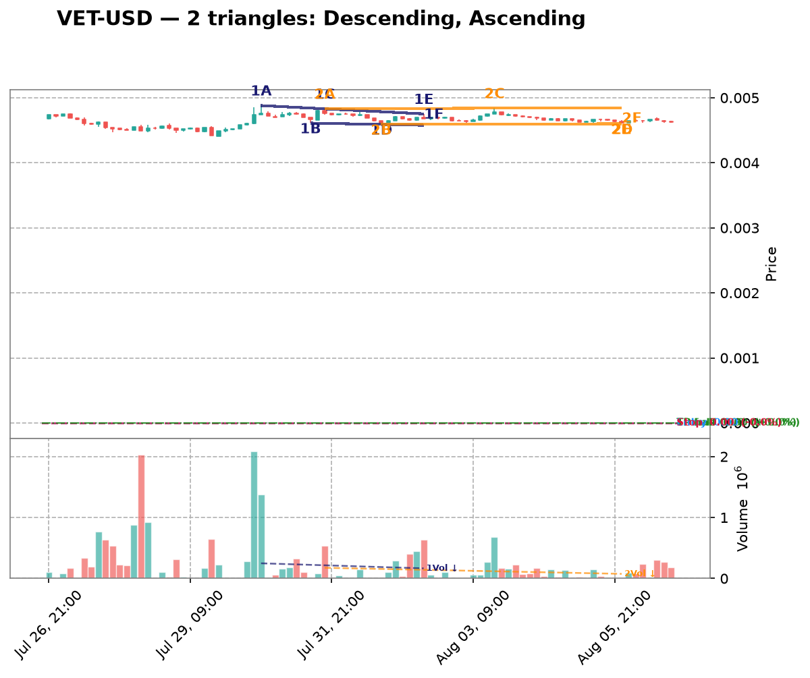
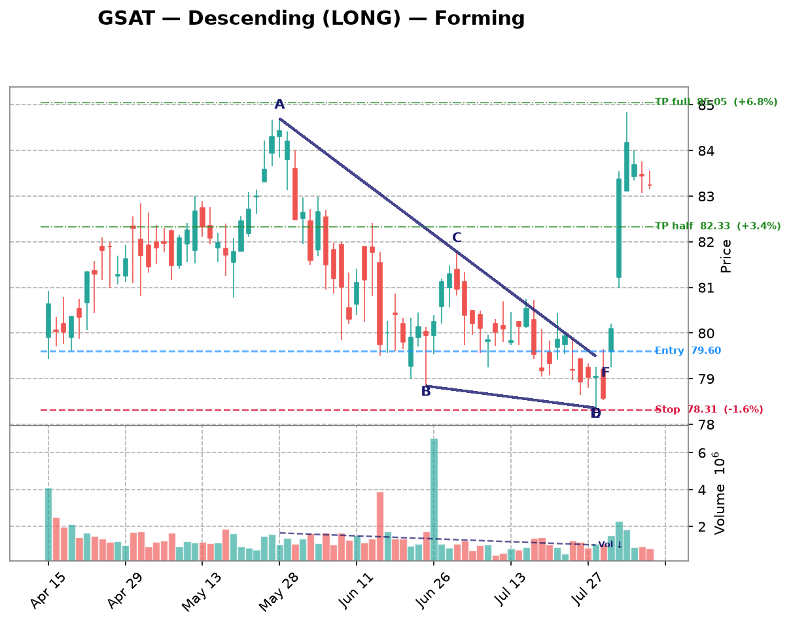

| Date | Symbol | TF | Pattern | Dir | Verdict | Claude Pattern | Claude Dir | Conf | Rec |
|---|---|---|---|---|---|---|---|---|---|
| crypto 10 patterns | |||||||||
| 2026-08-26 | DOGE-USD | 1d | Descending | LONG | Disputed | ? | ? | Certainty: 78 | — |
Chart  Claude Notes The right side of the chart (late June through early August) shows price flattening out around 0.070-0.075 after a sustained downtrend, but this looks more like consolidation/basing near a support floor than a descending triangle. There's no clear descending upper trendline with distinct lower highs converging toward a flat support - instead price action is choppy and roughly range-bound with small candles and low volume. The prior move (Jun-Jul) was a steep downtrend, not a series of lower highs compressing into a triangle. I don't see at least two clean touches on a descending resistance line paired with two touches on a flat support line - the pattern here is better described as a flattening/consolidation after a downtrend rather than a defined triangle. I disagree with the algorithm's descending triangle flag. Presence certainty 78/100 — how sure Claude is that its found/not-found call is correct | |||||||||
| 2026-08-26 | XRP-USD | 1d | Descending | LONG | Disputed | ? | ? | Certainty: 78 | — |
Chart  Claude Notes The right side of the chart (Jun-Aug) shows price oscillating in a tight, roughly flat range around 1.05-1.20 with no clear directional convergence between upper and lower boundaries. Both the highs and lows are essentially flat/horizontal, forming more of a rectangle/consolidation than a descending triangle. A descending triangle requires a clearly falling upper trendline (lower highs) combined with a flat support - but the highs here (~1.15-1.20) are not consistently declining across multiple touches; they bounce sideways. The overall multi-month structure is a downtrend into a flat bottoming range, which doesn't show the classic converging apex needed for a triangle. I disagree with the algorithm's flag - this looks more like sideways consolidation/basing after a downtrend rather than a descending triangle with clear compression. Presence certainty 78/100 — how sure Claude is that its found/not-found call is correct | |||||||||
| 2026-08-26 | VET-USD | 1d | Descending | LONG | Disputed | ? | ? | Certainty: 75 | — |
Chart  Claude Notes The right side of the chart (late Jun through Jul) shows price consolidating in a tight, roughly flat horizontal range between ~0.0044 and ~0.0050 with no clear convergence — both highs and lows are essentially flat, not forming a descending upper trendline with a flat base. This looks more like a rectangle/flag consolidation after the sharp downtrend from May, rather than a descending triangle. There's no clear series of lower highs compressing toward a flat support line; the recent candles (Jul) are choppy and range-bound rather than converging into an apex. I disagree with the algorithm's descending triangle flag — the pattern lacks the sloped upper resistance needed, and price isn't visibly compressing toward a point near the right edge. Presence certainty 75/100 — how sure Claude is that its found/not-found call is correct | |||||||||
| 2026-08-26 | ETH-USD | 1d | Symmetric | SYMMETRIC | Disputed | ? | ? | Certainty: 75 | — |
Chart  Claude Notes The right side of the chart (mid-Jul to Aug) shows price consolidating in a tight, roughly flat range between ~1830 and ~1950 with no clear converging trendlines - highs and lows are both roughly flat rather than converging toward an apex. This looks more like a flat consolidation/rectangle than a symmetric triangle, since there's no discernible narrowing wedge shape - candle ranges stay fairly constant rather than compressing. Prior to this, price made a sharp V-shaped move down to ~1550 and back up, which also doesn't support triangle boundaries connecting to the current consolidation. I don't see convincing higher-low/lower-high convergence with 2-3 touches on each side forming a narrowing wedge, so I disagree with the algorithm's symmetric triangle flag. Presence certainty 75/100 — how sure Claude is that its found/not-found call is correct | |||||||||
| 2026-08-26 | SOL-USD | 1d | Symmetric | SYMMETRIC | Disputed | ? | ? | Certainty: 68 | — |
Chart  Claude Notes From late June through late July, price has been trending gently downward from ~83 to ~73, with lower highs but a mostly flat/slightly declining support around 71-73 rather than rising lows. This looks more like a mild downward drift or shallow descending channel than a converging symmetric triangle - the range has narrowed somewhat but there isn't a clear rising lower trendline with higher lows to pair with the declining highs. Touch points on the upper side (78-83 area) are present, but the lower boundary is fairly flat (71-73) rather than ascending, which would argue against a true symmetric triangle. The compression is weak and ambiguous, so I lean toward rejecting the algorithm's symmetric triangle call, though the narrowing range does have some visual resemblance to consolidation. Presence certainty 68/100 — how sure Claude is that its found/not-found call is correct | |||||||||
| 2026-08-26 | MANA-USD | 4h | Ascending | SHORT | Disputed | ? | ? | Certainty: 78 | — |
Chart Claude Notes The right portion of the chart (late July into early August) shows price oscillating in a tight, roughly flat range between ~0.0655 and ~0.0685 with no clear rising lower support or converging structure — it's more of a flat consolidation/rectangle than a triangle. There's no series of higher lows to support an ascending triangle; lows are essentially flat (0.0655-0.0665) and highs are also flat (0.0680-0.0690), so the two boundaries are roughly parallel rather than converging. This looks like sideways consolidation after a downtrend, not a compressing triangle. I disagree with the algorithm's ascending triangle flag since there's no rising support line — both boundaries are nearly horizontal, which would at best be a range/rectangle, not a triangle with an apex forming. Presence certainty 78/100 — how sure Claude is that its found/not-found call is correct | |||||||||
| 2026-08-26 | SAND-USD | 4h | Descending | LONG | Disputed | ? | ? | Certainty: 78 | — |
Chart  Claude Notes The chart shows a clear, sustained downtrend from early July (~0.051) to a low near 0.0405 by late July, followed by a choppy consolidation/range-bound period (0.041-0.044) from Jul 28 through Aug 6 with no clear directional convergence. Highs and lows in this recent range are roughly flat/parallel rather than converging - there isn't a clearly falling upper trendline meeting a flat lower support line. The price action looks more like a rectangle/range consolidation after a downtrend than a descending triangle. I don't see well-defined lower highs compressing toward a flat support; the recent candles bounce between ~0.041 and ~0.044 without clear apex formation. This looks more like sideways consolidation than an actively converging triangle, so I disagree with the algorithm's flag. Presence certainty 78/100 — how sure Claude is that its found/not-found call is correct | |||||||||
| 2026-08-26 | XLM-USD | 3h | Descending | LONG | Disputed | ? | ? | Certainty: 85 | — |
Chart  Claude Notes The chart shows a clear downtrend with a series of lower highs and lower lows since early July, not a converging triangle. Near the right edge, price is making consistent lower lows (0.18 -> 0.175 -> 0.17 -> 0.165 -> 0.16) without a corresponding rising support line - there's no series of higher lows that would define an ascending triangle. The upper boundary is also declining, not flat/resistance-like. This looks like a persistent downtrend/possible descending channel rather than a compressing triangle. No clear apex or convergence point is visible near the right edge - price is simply trending down with lower volatility. I disagree with the algorithm's ascending triangle flag; the structure lacks the rising support line required, and there's no flat resistance being tested repeatedly. Presence certainty 85/100 — how sure Claude is that its found/not-found call is correct | |||||||||
| 2026-08-26 | ETC-USD | 3h | Descending | LONG | Disputed | ? | ? | Certainty: 80 | — |
Chart  Claude Notes The right side of the chart shows a persistent downtrend with lower highs and lower lows, not a compressing triangle. Price falls from ~7.2 to ~6.4 in a fairly steady descending channel/staircase pattern rather than converging trendlines. There's no flat support base typical of a descending triangle - the lows keep dropping (6.6, 6.5, 6.4, 6.35), which contradicts the 'flat support' requirement. This looks like a continuation downtrend rather than a triangle consolidation. I disagree with the algorithm's descending triangle (LONG) call, since a descending triangle requires a flat support line with lower highs, but here both support AND resistance are declining together in a trending channel, with no clear compression or basing structure near the apex. Presence certainty 80/100 — how sure Claude is that its found/not-found call is correct | |||||||||
| 2026-08-26 | VET-USD | 3h | Ascending | SHORT | Disputed | ? | ? | Certainty: 75 | — |
Chart  Claude Notes The right side of the chart shows a choppy, range-bound consolidation between roughly 0.00460 and 0.00475 with no clear converging trendlines. Highs are not forming a consistent descending line and lows are not forming a consistent ascending line - both appear roughly flat/noisy, resembling a rectangle/range rather than a converging triangle. There's no clear apex forming near the right edge. The algorithm's ascending triangle call doesn't hold up visually since the lower boundary isn't clearly rising and price isn't compressing into a point - it's just oscillating within a horizontal band after the prior swing from ~0.0048 down to ~0.0046. Presence certainty 75/100 — how sure Claude is that its found/not-found call is correct | |||||||||
| crypto-equity 5 patterns | |||||||||
| 2026-08-26 | MSTR | 3h | Descending | LONG | Disputed | ? | ? | Certainty: 75 | — |
Chart Claude Notes Price has been range-bound between roughly 90-104 since early July with no clear convergence. Highs and lows are choppy but not forming consistent lower highs or flat support - recent candles (late July into August) actually show a slight rising trend with higher lows around 94-96 and highs capped near 98-100, more resembling a flat/loose range than a converging descending triangle. There isn't a clean series of lower highs required for a descending triangle; the pattern looks more like sideways consolidation/noise than a credible triangle with defined trendlines. I disagree with the algorithm's descending triangle call. Presence certainty 75/100 — how sure Claude is that its found/not-found call is correct | |||||||||
| 2026-08-09 | MSTR | 1h | Ascending | SHORT | Disputed | ? | ? | Certainty: 78 | — |
Chart  Claude Notes The right-side price action (late Aug 5 into Aug 6) shows a decline from ~99 to ~96.5 with lower highs and lower lows together — this looks like a mild downtrend/pullback rather than a converging triangle with a rising support line. There's no clear rising trendline of higher lows; instead both highs and lows are declining in tandem, more consistent with a small descending channel or simple retracement than an ascending triangle. No flat resistance line is visible either (highs are dropping from ~99 to ~97.5 to ~97). I don't see the two clearly converging trendlines required for a valid triangle at the right edge, so I disagree with the algorithm's ascending triangle / short flag. Presence certainty 78/100 — how sure Claude is that its found/not-found call is correct | |||||||||
| 2026-08-09 | CIFR | 1h | Descending | LONG | Disputed | ? | ? | Certainty: 78 | — |
Chart  Claude Notes The chart shows a series of large swing oscillations (roughly 26->18->24->17->26->18->25->18) rather than a converging structure. Each swing has similar amplitude, indicating a broad trading range/downtrend with volatility rather than a narrowing triangle. Near the right edge, price is declining from ~25 to ~18-19 with no flattening support line or clear lower highs converging into an apex - the recent candles show a steady downward slide, not compression. There is no consistent horizontal support with descending highs; the swings are too wide and repetitive to qualify as a descending triangle. I disagree with the algorithm's flag - this looks like continued range-bound/down-trending price action, not a triangle nearing apex. Presence certainty 78/100 — how sure Claude is that its found/not-found call is correct | |||||||||
| 2026-08-09 | MARA | 1h | Descending | LONG | Disputed | ? | ? | Certainty: 78 | — |
Chart  Claude Notes {
"found_triangle": false,
"pattern_type": null,
"direction": null,
"presence_confidence": 78,
"pattern_quality": null,
"notes": "The chart shows an overall downtrend with successive lower highs (15, 14, 13, 12.7, 12) and lower lows (12, 11.8, 10.7, 10, 10.7), forming a descending staircase rather than a converging triangle. There's no flat/horizontal support line - the lows are also declining, not holding at a consistent level. At the right edge, price is consolidating in a tight range around 10.7-12 but without clear evidence of a rising lower boundary or flat lower support meeting a descending upper trendline with 3+ touches each. This looks more like a broader downtrend with intermittent consolidation than a well-defined descending triangle. The algorithm's flag is plausible given the recent narrowing range, but the lower boundary isn't flat - it's still sloping down, making this more consistent with a bearish channel/flag than a classic descending triangle setup for a LONG bias, which would typically need a firm horizontal support.",
} Presence certainty 78/100 — how sure Claude is that its found/not-found call is correct | |||||||||
| 2026-08-09 | IREN | 1h | Symmetric | SYMMETRIC | Disputed | ? | ? | Certainty: 72 | — |
Chart  Claude Notes The chart shows a broad downtrend from late June (~57) into a choppy bottoming/ranging structure from mid-July through early August, oscillating between roughly 30 and 44 with multiple swing highs and lows of similar magnitude - more like a wide horizontal range than a converging wedge. Near the right edge (early August), price is bouncing between ~37-41 without clear narrowing of highs and lows; recent candles show similar range width to prior weeks rather than compression toward an apex. I don't see two clearly converging trendlines with consistent touch points - the swing highs (44, 43, 41) and lows (33, 30, 36) don't form a tight symmetric convergence, they look more like a rounded/ranging base. I disagree with the algorithmic flag; this looks more like consolidation/basing after a downtrend rather than a well-defined symmetric triangle. Presence certainty 72/100 — how sure Claude is that its found/not-found call is correct | |||||||||
| mega-cap 4 patterns | |||||||||
| 2026-08-26 | AMZN | 1d | Descending | LONG | Disputed | ? | ? | Certainty: 82 | — |
Chart  Claude Notes The right side of the chart shows a sharp rally from ~230 to ~286 followed by a pullback to ~272, on a large volume spike - this looks like a breakout/impulsive move, not a converging consolidation. There's no clear flat support with lower highs converging into an apex; instead there are only 5-6 candles at the edge with a big directional move and a short retracement. No repeated touches on two converging trendlines are visible. The algorithm's descending triangle call doesn't match the visual structure, which is more of a breakout-and-pullback than a compression pattern. Presence certainty 82/100 — how sure Claude is that its found/not-found call is correct | |||||||||
| 2026-08-26 | META | 1d | Descending | LONG | Disputed | ? | ? | Certainty: 72 | — |
Chart  Claude Notes The right side of the chart shows a choppy decline from ~685 down to ~590-600 with a sharp drop to ~525 in early August followed by a bounce, then consolidation around 580-610. There's no clear flat support line - lows are irregular (685->525->580 recovery), and highs are also declining unevenly without a consistent slope. This looks more like a volatile downtrend with a sharp selloff and recovery attempt rather than a converging triangle. The algorithm's descending triangle call is not well supported since the 'support' isn't flat (it drops sharply to 525 then recovers), breaking the compression narrative. Not enough clean, consistent touch points on both trendlines to call this a credible triangle. Presence certainty 72/100 — how sure Claude is that its found/not-found call is correct | |||||||||
| 2026-08-26 | NVDA | 1d | Descending | LONG | Disputed | ? | ? | Certainty: 72 | — |
Chart  Claude Notes The right edge of the chart shows a sharp, almost vertical rally from the ~190 low (late July) to ~220-224, with large green bodies and expanding range — this is a breakout move, not a converging consolidation. There's no clear flat support line with repeated tests, nor a well-defined descending resistance line with multiple lower highs in the recent price action; the prior June-July action was more of a broad choppy range/downtrend than a tightening wedge. The algorithm's descending-triangle flag doesn't hold up: price has already broken out strongly to the upside without the multi-touch compression needed to validate a triangle boundary. I see fewer than the required 2+ credible touches on a descending upper trendline near the apex, so I reject the pattern as currently framed. Presence certainty 72/100 — how sure Claude is that its found/not-found call is correct | |||||||||
| 2026-08-26 | GOOGL | 4h | Ascending | SHORT | Disputed | ? | ? | Certainty: 85 | — |
Chart  Claude Notes The right side of the chart shows a strong uptrend from ~320 to a peak near 383, followed by a sharp pullback to ~357-365. This is not a converging triangle structure - there's no clear flat resistance being tested multiple times, nor a well-defined rising support line with multiple touches. The recent price action looks more like a spike top and reversal than a compression pattern. There are only 1-2 candles at the highs (~375-383) before the drop, not enough touches to establish a resistance line. The algorithm likely misread the strong rally into a peak as 'higher lows compressing into resistance', but there's no genuine apex or narrowing range visible - price broke sharply higher then reversed sharply lower, which is more consistent with a blow-off top than a triangle breakout. Presence certainty 85/100 — how sure Claude is that its found/not-found call is correct | |||||||||
| semiconductors 3 patterns | |||||||||
| 2026-08-26 | ADI | 4h | Descending | LONG | Disputed | ? | ? | Certainty: 72 | — |
Chart  Claude Notes The chart shows a strong downtrend from late June (~440) into early August (~355), followed by a modest bounce/stabilization near 360-385 at the right edge. There isn't a clear flat support line with a descending resistance line converging toward it - the recent price action (last ~10 candles) shows fairly flat, choppy consolidation around 370-385 without well-defined lower highs compressing into a point. This looks more like a basing/consolidation range after a downtrend rather than a descending triangle. I don't see at least two clean touches on a descending upper trendline and two on a flat lower support line converging toward an apex. The algorithm's flag seems to be reading normal post-downtrend consolidation as a triangle, but the touch points are too sparse and the recent candles are too flat/range-bound rather than converging. Presence certainty 72/100 — how sure Claude is that its found/not-found call is correct | |||||||||
| 2026-08-09 | LRCX | 1h | Ascending | SHORT | Disputed | ? | ? | Certainty: 72 | — |
Chart  Claude Notes The right-side price action (early Aug) shows a choppy range between roughly 305-320, but there's no clear ascending support line—lows are flat/noisy (around 305-308) rather than making distinct higher lows, and the highs are also roughly flat (~315-320) rather than converging. This looks more like a horizontal consolidation/rectangle than a true ascending triangle. The algorithm likely flagged minor higher-low bumps, but there aren't 2-3 clean touch points forming a rising trendline distinct from a flat one. Prior to this, price action from mid-July was a clear downtrend with lower highs/lower lows, not a triangle. Given the ambiguity of the recent consolidation, I lean toward rejecting the triangle call, though a loose case for a shallow ascending structure isn't impossible. Presence certainty 72/100 — how sure Claude is that its found/not-found call is correct | |||||||||
| 2026-08-09 | AMAT | 1h | Symmetric | SYMMETRIC | Disputed | ? | ? | Certainty: 72 | — |
Chart  Claude Notes The right side of the chart shows a rally from ~500 to ~555 followed by a pullback to ~530, but this looks like a rounded top / pullback within a broader swing rather than a converging triangle. There's no clear sequence of lower highs meeting higher lows - the recent candles (Aug 03-08) show a peak around 555 then a fairly sharp drop to 530, which is more consistent with a short-term downtrend or consolidation than a symmetric wedge. I don't see at least two clean, roughly parallel converging trendlines with multiple touches on each side near the apex. The algorithm may be reacting to the general narrowing of range after the spike, but the touch points are too few and inconsistent to confirm a genuine symmetric triangle. Presence certainty 72/100 — how sure Claude is that its found/not-found call is correct | |||||||||
| forex 2 patterns | |||||||||
| 2026-08-09 | EURUSD=X | 1h | Ascending | SHORT | Disputed | ? | ? | Certainty: 82 | — |
Chart  Claude Notes The right side of the chart shows a clear downtrend from the Aug 5 peak (~1.156) into Aug 6, with lower highs and lower lows in a fairly consistent decline, followed by a flattening/consolidation near 1.1525-1.153. There's no clear rising support line with higher lows to form an ascending triangle - instead price dropped sharply and is now consolidating in a narrow range without a defined converging structure. The algorithm's ascending triangle call doesn't fit since there's no series of higher lows visible; the recent price action looks more like a sharp decline stabilizing at a new lower level rather than a triangle compression. Not enough touch points on both an upper and lower trendline to confirm any triangle pattern near the apex on the right edge. Presence certainty 82/100 — how sure Claude is that its found/not-found call is correct | |||||||||
| 2026-08-09 | NZDUSD=X | 1h | Ascending | SHORT | Disputed | ? | ? | Certainty: 78 | — |
Chart  Claude Notes The right side of the chart shows price consolidating in a choppy range between ~0.5865 and ~0.590 after a strong impulsive rally from late July. However, this looks more like a flat/rectangular consolidation than an ascending triangle - the highs are roughly flat (~0.590) but the lows are also fairly flat/choppy (~0.5865-0.587), not showing a clear rising sequence of higher lows. There's no clean converging trendline structure - both boundaries appear roughly horizontal rather than one flat and one rising. This resembles sideways consolidation or a minor pullback/flag after the breakout rather than a textbook ascending triangle with rising support. The algorithm's flag seems to be picking up on the tightening range but the specific 'rising lower trendline' criterion for ascending triangle isn't clearly satisfied here. Presence certainty 78/100 — how sure Claude is that its found/not-found call is correct | |||||||||
| hardware 2 patterns | |||||||||
| 2026-08-26 | DELL | 1d | Ascending | SHORT | Disputed | ? | ? | Certainty: 78 | — |
Chart  Claude Notes The right side of the chart shows a broad choppy trading range roughly between 370-460 since early June, followed by a recent higher low (~370-390) and a push up to new highs near 480. This looks more like a wide consolidation/range with a modest uptrend rather than a converging triangle - there's no clear flattening resistance line; highs have actually expanded upward (400->460->480) while lows have also risen, giving more of a rising channel/uptrend look than a narrowing wedge. The algorithm's ascending triangle call doesn't hold up because the upper boundary isn't flat - it's rising along with the lows, so the lines aren't converging toward an apex. I don't see a credible triangle structure forming at the right edge. Presence certainty 78/100 — how sure Claude is that its found/not-found call is correct | |||||||||
| 2026-08-09 | STX | 1h | Descending | LONG | Disputed | ? | ? | Certainty: 72 | — |
Chart  Claude Notes The right-side price action (Aug 03–06) shows a choppy, roughly flat range between ~815 and ~890 with no clear convergence — highs and lows are similarly spaced throughout rather than narrowing toward an apex. There's a sharp downside wick near Aug 06 breaking below the recent range low (~780), which argues against a clean descending triangle setup (support was violated, not respected). I don't see a consistent flat support line with lower highs converging into it; instead it looks like sideways consolidation/noise with one outlier spike down. Not enough clean touch points on both a flat lower line and a descending upper line to call this a credible descending triangle. Presence certainty 72/100 — how sure Claude is that its found/not-found call is correct | |||||||||
| space 2 patterns | |||||||||
| 2026-08-26 | GSAT | 1d | Descending | LONG | Disputed | ? | ? | Certainty: 85 | — |
Chart  Claude Notes The right side of the chart shows a decline from ~82 down to ~79 (late July), followed by a sharp, sudden gap-up breakout to ~84 with a large green candle, then consolidation with small candles around 83-84. There's no clear converging price structure - no flat support line with descending resistance, and no series of lower highs compressing into an apex. The recent action is a strong impulsive move up followed by tight sideways consolidation (more like a flag/pennant after a breakout gap), not a descending triangle. The algorithm likely mistook the pre-breakout decline as descending triangle formation, but there's no clear horizontal support being tested multiple times - price just dropped and then gapped up sharply, breaking any potential pattern structure decisively to the upside already. Presence certainty 85/100 — how sure Claude is that its found/not-found call is correct | |||||||||
| 2026-08-26 | SPCE | 4h | Descending | LONG | Disputed | ? | ? | Certainty: 65 | — |
Chart  Claude Notes The chart shows a sharp decline from early June highs (~6.0) into late June, followed by a long consolidation/basing phase around 2.5-3.0 from late June through early August. This is more of a flat bottoming/ranging structure than a descending triangle. There's no clear descending upper trendline with lower highs - the highs in the recent consolidation (late July-Aug) are actually flat to slightly rising (~2.9-3.0), while the lows are also fairly flat (~2.5-2.6). This looks like a flat/rectangular consolidation rather than a converging triangle. The recent price action (last ~10 candles) shows a breakout upward from the range with higher closes near 2.9-3.0, suggesting the base has already resolved upward rather than still compressing into an apex. I disagree with the algorithm's descending triangle call since the upper boundary isn't clearly declining and price appears to have already broken out rather than still coiling. Presence certainty 65/100 — how sure Claude is that its found/not-found call is correct | |||||||||
| adtech 1 pattern | |||||||||
| 2026-08-26 | U | 1d | Ascending | SHORT | Disputed | ? | ? | Certainty: 90 | — |
Chart  Claude Notes The right side of the chart shows a strong, accelerating uptrend with a large green breakout candle and a volume spike, not a converging triangle. There's no flat or descending resistance line being tested with lower highs - price is making progressively higher highs with expanding range, the opposite of compression. This looks like a breakout/impulse move rather than a consolidation pattern. The algorithm's 'ascending triangle' flag doesn't hold up visually - there's no clear flat resistance level being repeatedly tested; instead price has already broken sharply higher with strong momentum and volume confirmation, making a bearish (SHORT) interpretation particularly implausible given the bullish price/volume action. Presence certainty 90/100 — how sure Claude is that its found/not-found call is correct | |||||||||
| commodities 1 pattern | |||||||||
| 2026-08-26 | NEM | 4h | Descending | LONG | Disputed | ? | ? | Certainty: 78 | — |
Chart  Claude Notes The chart shows a clear downtrend from mid-June highs (~112) into a low around Jul 17-19 (~89), followed by a recovery uptrend into early August (~105). This is a V-shaped reversal, not a triangle. There's no clear horizontal support with converging lower highs near the right edge - instead price is making higher highs and higher lows as it recovers (Jul 19 low ~89, Jul 27 low ~90, Aug 1 low ~93, trending upward). The algorithm's descending triangle call doesn't hold up: a descending triangle requires a flat/horizontal support base with lower highs compressing into it, but here the recent structure on the right shows rising lows and rising highs (consolidation/uptrend), not compression toward a flat floor. The most recent candles (Aug 3-6) are also drifting sideways to slightly up without clear converging trendlines - insufficient touch points on both sides to confirm any triangle shape. Presence certainty 78/100 — how sure Claude is that its found/not-found call is correct | |||||||||
| fintech 1 pattern | |||||||||
| 2026-08-26 | SOFI | 1d | Descending | LONG | Disputed | ? | ? | Certainty: 78 | — |
Chart  Claude Notes The right side of the chart shows a sharp drop to ~15 in late July followed by a strong rally back to ~18.5, then a small pullback - this looks like a V-shaped reversal with a brief consolidation, not a converging triangle. There's no clear descending upper trendline (lower highs) meeting a flat support; instead price gapped down then surged up in a near-vertical move, breaking well above recent highs. Only 2-3 candles exist after the spike, insufficient to establish two converging trendlines with multiple touch points. This looks more like a failed/no pattern or early impulsive breakout rather than a triangle still forming. I disagree with the algorithm's descending triangle flag - the price action lacks the repeated lower-high touches needed, and the recent action is expansive (large range candles) rather than compressing. Presence certainty 78/100 — how sure Claude is that its found/not-found call is correct | |||||||||
| industrials 1 pattern | |||||||||
| 2026-08-09 | RCL | 1h | Ascending | SHORT | Disputed | ? | ? | Certainty: 80 | — |
Chart  Claude Notes The right side of the chart shows price oscillating in a fairly flat range between ~318 and ~330 after a strong impulsive rally from late July. There's no clear rising lower support line - the recent lows (~320-322) are roughly flat or even slightly declining, not making higher lows as required for an ascending triangle. The highs are also roughly flat (~328-330) rather than converging with the lows. This looks more like a consolidation/range or minor pullback after a strong uptrend rather than a converging triangle. I don't see two clear trendlines converging toward an apex - the pattern lacks the compression structure needed. Disagreeing with the algorithm's ascending triangle flag; the structure is closer to a flat consolidation/rectangle than a triangle with rising support. Presence certainty 80/100 — how sure Claude is that its found/not-found call is correct | |||||||||
| internet 1 pattern | |||||||||
| 2026-08-26 | SNAP | 1d | Descending | LONG | Disputed | ? | ? | Certainty: 82 | — |
Chart  Claude Notes The chart shows a broad downtrend from late April into mid-June, then a basing/consolidation phase from mid-June through late July around the 4.4-4.9 range, followed by a sharp breakout candle in early August that pushed price up to ~5.8 before pulling back. There is no clear descending triangle structure - the consolidation phase (Jun 18-Aug 1) is more of a flat, choppy range than a converging wedge with lower highs. The recent price action at the right edge is a strong upward impulse followed by a pullback, not a compression into an apex. The algorithm's descending triangle call doesn't hold up because there's no clear falling upper trendline with 2-3 descending touch points converging on a flat support - the range candles are fairly random in height rather than systematically narrowing. This looks more like a base breakout that already occurred rather than a triangle still forming. Presence certainty 82/100 — how sure Claude is that its found/not-found call is correct | |||||||||